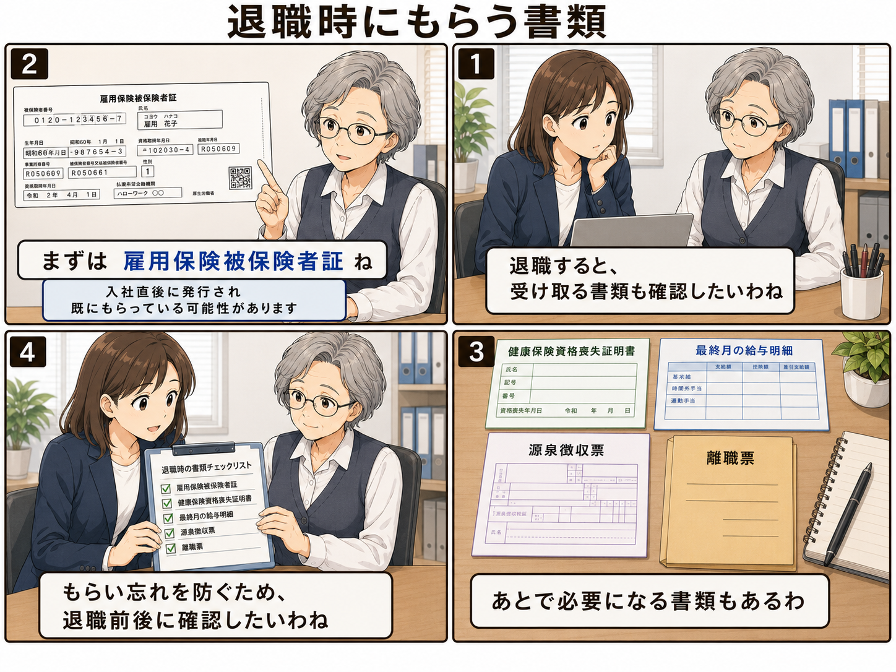

退職時にもらう書類を確認しよう
退職するときは、退職届を出して終わりではありません。 退職後の転職、健康保険、失業給付、税金の手続きで使う書類があります。 もらい忘れを防ぐため、退職前後に確認しておきましょう。

※会社や雇用形態によって、発行時期や受け取る書類は異なります。必要に応じて勤務先へ確認してください。
退職時にもらう書類の例
退職時に確認したい主な書類は、次のようなものです。 特に、退職後すぐに手続きが必要になる人は、早めに確認しておくと安心です。
- 雇用保険被保険者証 雇用保険に加入していたことを示す書類です。 入社直後に発行され、すでに本人が受け取っている場合もあります。
- 健康保険資格喪失証明書 会社の健康保険を外れたことを示す書類です。 国民健康保険への切り替えなどで必要になることがあります。
- 最終月の給与明細 最後の給与、控除、支給内容を確認するための書類です。 退職月の給与計算を確認する材料になります。
- 源泉徴収票 その年の給与や所得税額を確認するための書類です。 転職先での年末調整や、確定申告で必要になることがあります。
- 離職票 失業給付の手続きで必要になることがあります。 退職後すぐに届かない場合もあるため、必要な人は会社へ確認しましょう。
雇用保険被保険者証は、すでに持っている場合もある
雇用保険被保険者証は、退職時に初めて受け取るとは限りません。 入社後に発行され、会社から本人へ渡されている場合もあります。
手元にない場合でも、会社が保管していることがあります。 見当たらないときは、退職前後に確認しておくとよいでしょう。
離職票は、必要な人ほど確認しておきたい
離職票は、失業給付の手続きで使うことがあります。 退職後すぐに別の会社へ転職する場合は使わないこともありますが、 失業給付を受ける可能性がある人は重要です。
離職票は退職日当日に必ず受け取れるとは限りません。 退職後に会社から送られてくる流れになることもあります。
会社によって発行時期は違う
ここで紹介した書類は、すべて同じタイミングで受け取れるとは限りません。 退職日当日にもらえるもの、後日郵送されるもの、すでに受け取っているものがあります。
退職時のやり取りを減らしたい場合でも、必要書類については確認しておく方が安全です。
退職前後に確認しておきたいこと
- どの書類を会社から受け取る予定か
- いつ頃発行・郵送されるか
- 会社に返却するものはないか
- 退職後の連絡先を会社に伝えているか
- 転職先や役所の手続きで必要な書類は何か
退職届を作成するなら
退職の意思表示を文書で整理したい場合は、退職ツールで退職届を作成できます。 郵送で進めたい人向けの案内も用意しています。
退職ツールを開く